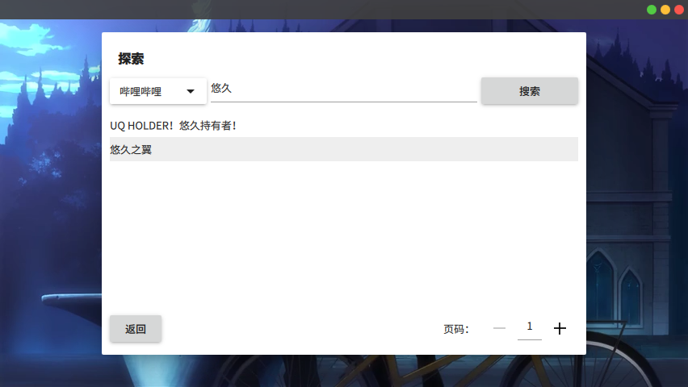
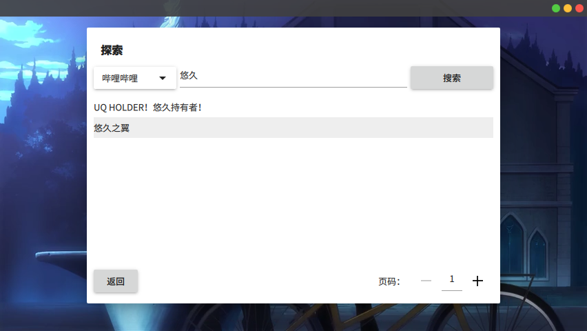
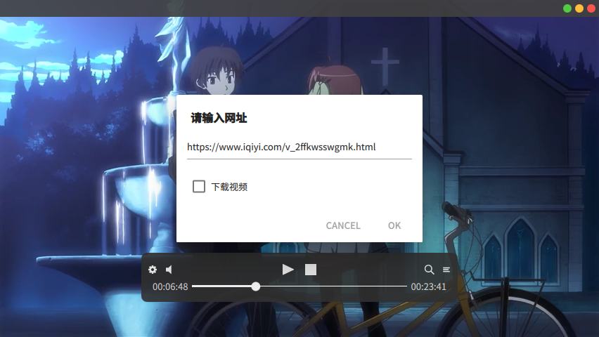
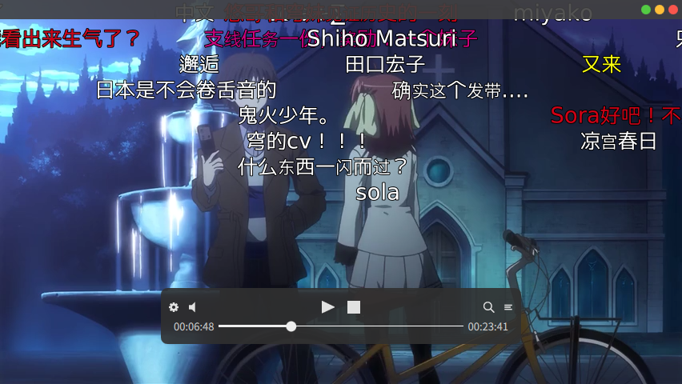
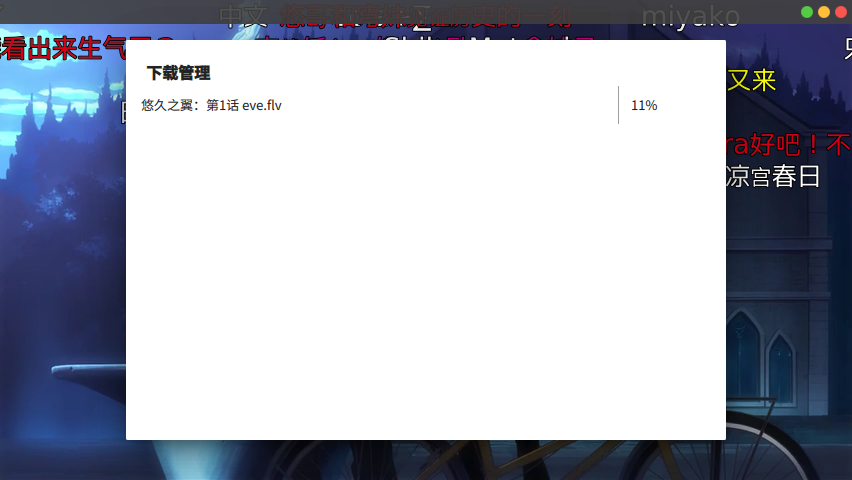

特性
MoonPlayer 是一个有趣的播放器，让您轻松享受观看视频的乐趣，轻松在线观看或下载来自Youtube、B站、优酷等诸多网站的视频。


轻松、优雅的视频打开方式！
 

随心所欲地浏览、播放在线视频！

播放任意网站的在线视频！

支持弹幕！

还可以下载视频！

完美支持硬件解码！
亮点：
- 酷
- 很酷
- 非常酷
- 界面美观，轻量小巧
- 基于MPV内核，能播放几乎所有视频格式
- 专注于在线播放，但也支持本地视频，能加载弹幕
- 支持用 插件 扩展程序
安装
Windows / macOS
从 Release page 下载安装包。
Linux
Debian
添加 DebianOpt 源，然后 sudo apt install moonplayer。
ArchLinux & Manjaro
添加 ArchLinuxCN 源，然后 pacman -S moonplayer。
开发
软件源代码托管在 GitHub。如果您发现了问题或者有改进建议，请提交到 issue tracker。
捐助
MoonPlayer 是免费软件。如果你觉得它不错，请 捐助我们。您的支持就是我们的动力！
许可协议
MoonPlayer 是在 GPL version 3 or later 许可证下发行。请阅读 LICENSE 文件获取详情。